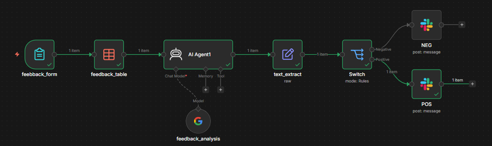

Automation · n8n
Automated Feedback Classifier
An n8n workflow that reads each customer feedback entry, lets Gemini classify its sentiment and topic, and posts it to the matching Slack channel.
The brief
A company collects about 200 feedback submissions a month: reviews and support tickets. A CRM manager reads, tags and forwards them by hand, which takes about 4 hours a week.
Entries wait in a central table for days. Negative feedback sits in the same queue as positive feedback, so customers at risk of churning wait as long as everyone else.
Volumes and hours come from the task brief.
What I built

Six nodes
- Feedback formA customer submits feedback through an n8n form.
- Feedback tableThe entry is stored, so every submission is kept, whatever its sentiment.
- AI agent (Gemini)Gemini returns two fields: the sentiment and a category, for example bug, billing, shipping or UX.
- Text extractPulls the two fields out of Gemini's answer so the next node can use them.
- SwitchRoutes by rule: negative to one branch, positive to the other. Neutral entries stay in the table.
- SlackPosts the entry to a negative or a positive channel. The negative channel alerts the Customer Success team.
Slack app and demo
I created a Slack app, mySlack, in the Slack API console, installed it in a workspace, and connected it to n8n so the workflow can post to Slack.
To test both routes, I wrote negative and positive sample entries and ran each through the form.


The AI step
The agent prompt asks Gemini for a fixed answer format. A fixed format lets the text-extract node read the result the same way every time.
Show the agent prompt
Estimated impact
These are estimates built on the task brief, not measured results. The workflow alerts the team; a person still writes the reply.
AI use. I designed and built the workflow, the Slack app and the test data. Gemini classifies feedback when the workflow runs. The presentation slides were made with Gamma (AI-assisted).